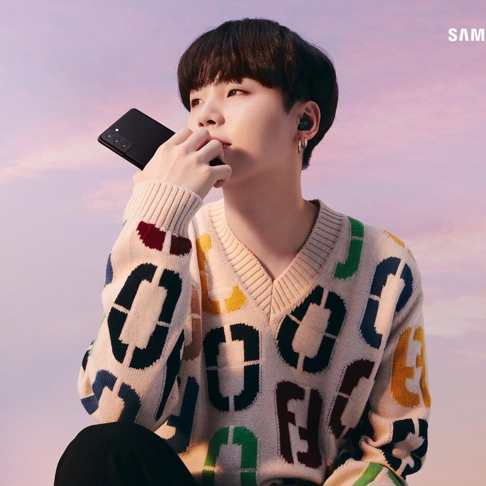
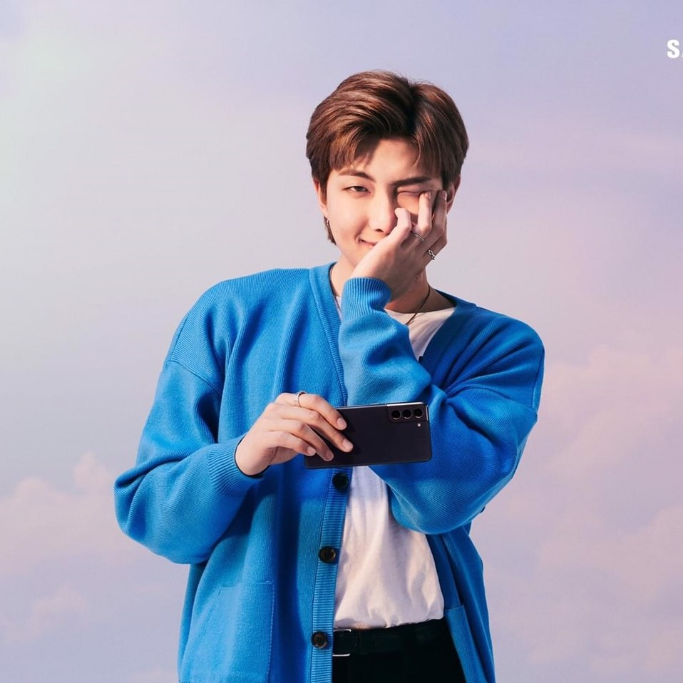

Magic Shop (8)
你的存在可以帶來幸福快樂，我希望你能記住這一點
那些想要看起來更年輕的人，應該要以年輕的心生活

生活是艱難的，也不一定每件事都能夠很順利，但我們應該要勇敢，繼續我們的生活
情緒在每種情況和每一個時刻都是不同的，所以我認為人生就是在煩惱著每一刻

如果你想愛別人，我想你應該先愛自己
我必須接受這一點 - 我無法讓每個人都喜歡我。 因為當有愛，就會有仇恨；當有光時，就會有黑暗。 但作為一位藝人，我真的很難接受有很多人討厭我；但另一方面，也有更多的人愛我。 我想每個人都會有這樣的經歷

即使這場雨停止，雲層消失了，我依然會站在這裡
這些音樂讓我對年輕一代產生了同情，我想創造和寫出代表他們的更多音樂
繼續走你的路，即使你只剩一天的時間
一旦你的內心被感動，它就會變得更好、更正向
紫色是彩虹的最後一種顏色，紫色意味著我會相信並愛你很久
不要被困在別人的夢想中
努力造就你的成功，如果你現在沒有做到最好，你會後悔。不要認為現在為時已晚，繼續努力就對了；雖然需要花很多的時間，但只要多加練習，沒有什麼會變得更糟，所以就練習吧。 你可能會感到沮喪，但這也證明了你做得很好。